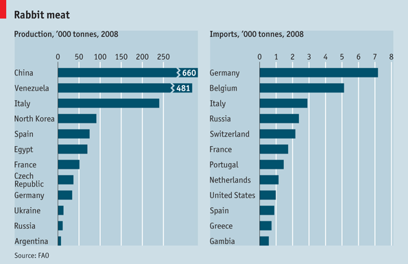

Apr 21st 2011, 14:41 by The Economist online
Which countries produce and import the most rabbit meat?
WITH Christians preparing to celebrate Easter, children are looking forward to the arrival of the rather more pagan Easter Bunny. But around the world, rabbits have a more prosaic, less chocolatey use. China, currently enjoying the year of the rabbit, is both the largest producer and the largest exporter of rabbit meat, according to figures from the UN's Food and Agriculture Organisation. Venezuela, the second-biggest producer, tends to keeps its rabbit at home and is not among the top-20 exporters. Germany, the biggest importer, spent over $40m on the meat in 2008. The Easter Hare (the Bunny’s forebear), which first appeared in German folklore, would not be impressed.

About Daily chart
On this blog we publish a new chart or map every working day, highlight our interactive-data features and provide links to interesting sources of data around the web.

Readers' comments
The Economist welcomes your views. Please stay on topic and be respectful of other readers. Review our comments policy.
Sort:
I am a vegetarian...
Last year (2010) was the year of the Tiger according to the Chinese Calendar, so? lol
For once I'm happy Canada isn't on the list.
RussianSphinx -
Well, nobody's perfect.
North Koreans have enough food to export? weird. @magneticjoony
North Koreans have enough food to export? weird. @magneticjoony
What's up with 3 dictatorships being in the top 4 rabbit producers?
He gave up being condesending as a form of scarcasm, and thus a complete waste of time.
Kristina Brooker.
Hossenfeffer!!!
I can safely say that Elmer Fudd doesn't live in China.
Regards
NK probably re-exports what China had previously provided...
All I know is, Australia needs to become a top exporter.
http://en.wikipedia.org/wiki/Rabbits_in_Australia
To paraphrase "Finding Nemo", "Rabbits are friends, not food!"
@tocharian - China has practically run out of tigers to eat.
US imports rabbit? Geez, we just waste them with .22s along with prairie dogs and other varmints out in the fields. They needs to be bagged and sold. That's one thing less we have to import.
Nations that are generally poor producers of red meats tend to be high producers of rabbit meat, this is because rabbits are extremely easy to raise (they reproduce quickly, they have a flexible diet), their meat is not that bad, and their fur can be sold.
30-50 years ago it was quite common in Germany to have a stable with a few rabbits in the back yard, the stable vanished but the appetite for rabbits still exists :-)
When I decided to invite a PhD student from Ethiopia for dinner I ask whether rabbit would be ok - I had some very good Italian recipies and rabbits are common on Austrian consumer markets.
He looked really horrified and later explained to me, that rabbits are for his people like rats and he would prefer chicken :-)
Sorry folks, but I'm certain the production figure for Venezuela is wrong. 481,000 tons produced would imply we eat 3 times as much rabbit as pork, and almost as much rabbit as beef, which is just far-fetched. Rabbit's nowhere near that big a part of our diet:
http://caracaschronicles.com/2011/04/21/hugo-the-bunnymen/
As one of my favorite cards puts it, There is no Easter Bunny - Santa Claus ate him for Thanksgiving.
Curious that AUSTRALIA is not among the main producers and exporters of rabbit meat when it should be the first one....
Rabbits are delicious and cows are cute. Why are people so shocked by this? Who decides what is a pet and what is food?
Looking at the figure for Venezuela, assuming a population of about 23.4 million, they produce 400g of rabbit meat per person per week, and most of that isn't exported.
It does indeed seem like a lot.
My guess would have been that the total meat and fish consumption by Venezuelans would have been less than 400g per person per week.